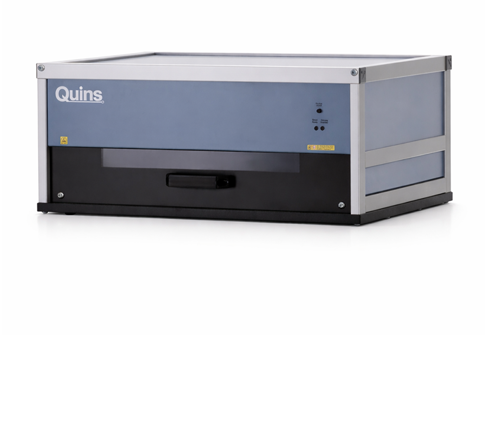

Optical inspection for electronics manufacturing, EMS and quality assurance
QUINS Pro: Optical inspection for printed circuit boards and electronic assemblies
Also available as UV or PCB version
QUINS Pro is the optical inspection system for simple, reliable and traceable visual inspection of printed circuit boards, populated assemblies and electronic components. It supports electronics manufacturers, EMS providers and PCB producers in component placement checks, golden-board comparison, reference-image inspection, solder joint inspection and automated documentation.
With intuitive operation, fast setup and practical hardware, QUINS Pro is ready for use in no time — without programming effort and without complex integration into existing production processes.
Suitable for SMT & THT · Golden-board comparison · Reference-image inspection · Traceability & documentation · UV and HR variants available · Made in Germany

What is QUINS Pro?
QUINS Pro is an optical inspection system for printed circuit boards and electronic assemblies. It supports visual inspection, reference-image inspection, component placement checks, solder joint inspection and golden-board comparison. Typical application areas include incoming goods inspection, first article inspection, sample inspection, series inspection and final inspection in electronics manufacturing.
QUINS Pro is an optical inspection system for checking printed circuit boards and electronic assemblies. It is used to reliably detect, compare and document visually visible defects in components, solder joints, PCBs, paste application and protective coating.
The system is suitable for manual and assisted inspection processes in electronics manufacturing — from incoming goods inspection through component placement checks to final inspection. By comparing with a reference image or golden board, QUINS Pro helps users quickly identify deviations and securely preserve inspection results.
QUINS Pro is particularly suitable for companies that want to standardise visual inspection, relieve staff and build complete inspection documentation.
Inspection tasks
Optical inspection for every step of your electronics production
QUINS Pro can be flexibly integrated into various inspection processes. The system supports quality control, production and development wherever printed circuit boards, electronic assemblies or optically inspectable components must be assessed reliably. Typical application areas are:
Incoming goods inspection of PCBs and assemblies
Paste inspection before or during production
Component placement checks for SMT and THT components
First article inspection and release of new assemblies
Sample inspection in ongoing production processes
Component inspection and position control
Reference-image inspection with comparison to a reference image
Golden-board comparison for detecting deviations
Manual solder joint inspection
THT inspection and SMT inspection
Set-up control and production release
Outgoing goods inspection and final inspection
Series inspection for small, medium and large series
UV inspection of protective coatings and conformal coating with QUINS Pro UV
Whether prototype, small series or series production: QUINS Pro helps make inspection processes faster, safer and better documented.
Error detection
Recognise, compare and document visible defects
QUINS Pro supports the detection of all visually visible defects on printed circuit boards, assemblies, components, solder joints, paste application and protective coatings. As a result, the system is suitable both for conventional visual inspection and for structured inspection processes using a reference image, golden board or reference-image inspection.
Typical component defects
Component missing
Component incorrect
Component twisted
Component reversed
Component shifted
Component standing upright
Component defective
Component over-populated
Pin bent
Incorrect component position
Incorrect PCB version
Typical solder joint defects
Solder bridge
Solder joint not soldered
Defective solder joint
Solder bead on joint
Contaminated solder joint
Manually noticeable solder connection
Visible interruptions or missing areas
Typical paste and coating defects
No paste
Too little paste
Too much paste
Smudged paste
Paste bridge
Missing protective coating
Too little coating
Too much coating
Coating splashes
Bubble formation
Errors in the conformal coating layer with UV variant
Typical PCB and structure defects
Damage
Contamination
Trace interruption
Trace too narrow
Trace too thick
Incorrect bridge
Incorrect hole
Hole too large
Hole too small
Too little solder resist
Too much solder resist
QUINS Pro does not replace a professional assessment by trained personnel, but it does make visual inspections substantially more structured, reproducible and better documented.
Advantages
Why QUINS Pro?
Ready for use quickly
QUINS Pro has been developed for practical use in production and quality assurance. The setup is simple, the entry is intuitive and the inspection process can be used productively within a short time.
No programming effort
The system is designed to set up inspection processes without classical programming effort. That means changing products, prototypes and small series can be inspected efficiently.
Ideal for golden-board comparison and reference-image inspection
With QUINS Pro, test items can be compared with reference images or a golden board. Deviations become visible more quickly and can be assessed and documented transparently.
Complete documentation and traceability
Inspection results can be documented automatically. This supports traceability, quality assurance and internal evidence requirements — in a tamper-proof and process-oriented way.
Relief for staff
QUINS Pro supports inspectors directly in their daily work. The clear image display, simple operation and structured inspection provide less searching, less uncertainty and tangible relief from day one.
Flexible for different production steps
Whether incoming goods, component placement checks, solder joint inspection, final inspection or series inspection: QUINS Pro can be used at various points in the production process.
Durable, practical hardware
The hardware is robust, ESD-safe and designed for long-term use in production-like environments. QUINS develops hardware and software in a practical way — with direct feedback from real customer applications.
Over 30 years of experience
QUINS has stood for optical inspection systems from Germany for over 30 years. This experience flows into the operating concept, hardware, software and support.
Inspection workflow
How optical inspection works with QUINS Pro
1. Capture a reference
A reference image, a golden board or a defined inspection state is first created. This serves as the basis for the later comparison.
2. Place the test item
The PCB or assembly to be inspected is placed in the system. Depending on the application, SMT, THT or mixed assemblies can be inspected.
3. Capture an image
QUINS Pro captures the assembly in high resolution and with shadow-free illumination. The specially developed LED lighting supports a clear representation of components, solder joints, markings and surfaces.
4. Detect deviations
Compared with the reference image, visible differences become much easier to see. This helps with missing, incorrect, shifted, twisted or reversed components as well as visible solder, paste or coating defects.
5. Document the result
Irregularities and inspection results can be documented in a traceable way. This creates a transparent inspection history for quality assurance, traceability and internal release processes.
Variants
QUINS Pro variants for different inspection tasks
Not every inspection task places the same demands on resolution, lighting, assembly size or component height. That is why QUINS Pro is available in several variants.
QUINS Pro
The proven optical inspection system for PCBs, electronic assemblies, incoming goods inspection, component placement checks, solder joint inspection, golden-board comparison and final inspection.
QUINS Pro UV
The UV variant is suitable for inspection tasks around protective coatings and conformal coating. It makes missing coating, too little coating, too much coating, coating splashes or visible coating distributions visible and documentable.
QUINS Pro HR
QUINS Pro HR is the high-resolution variant for particularly detailed inspection tasks. With a resolution of up to 4,800 dpi, the HR variant is suitable for applications where the smallest details must be safely visible. More on this: QUINS Pro HR.
QUINS Pro Tableau / PCB
Suitable variants are available for test tables, PCBs or larger PCB formats. These are particularly suitable for inspection processes where several PCBs or larger formats are compared and documented efficiently.
QUINS Pro Longboard, Highboard and Bigbox
Special variants such as Longboard, Highboard and Bigbox are available for oversized boards, particularly tall components or special test applications. This allows QUINS Pro to be adapted to special requirements in production and quality assurance.
Features
Technical details of QUINS Pro
Dimensions
693 x 504 x 323 (W x D x H)
Weight
30 kg
Image unit
CCD line scan camera (7,020 pixels/line)
Max. resolution
Up to 1,200 dpi
Effective pixels
71.6 Megapixels
Max. image size
430 x 320 mm
Max. assembly size
• 510 x 349 mm • 600 x 390 mm (PCB version)
Throughput height
• 50 mm (SMD / mixed assembly) • 60 mm (THT)
Scan speed
• 3.8 ms/line (colour) • 1.3 ms/line (black and white)
Illumination
Double-row LED lighting with 308 LEDs
Light intensity
1,600 candela at a height of 50 mm
Power consumption
80 W when scanning
Operating system
Windows 11, 64-bit Professional
Do you have special requirements for assembly size, component height, resolution or UV inspection? We will be happy to advise you on the appropriate QUINS Pro variant.
Software and extensions for your inspection process
QUINS Pro shows its strength in combination with the QUINS software. Depending on the inspection task, the system can be expanded with suitable software modules — from simple optical inspection to automatic documentation, repair support, statistics and data control.
For data control, setup support and preparation of inspection processes.
Who is QUINS Pro suitable for?
QUINS Pro is aimed at companies and institutions that want to reliably check and document printed circuit boards, electronic assemblies or optically inspectable components.
Typical users are:
EMS providers
Electronics service providers
Electronics manufacturers
Assembly companies
PCB manufacturers
Prototype businesses
Quality assurance and incoming goods inspection
Production planning and process optimisation
Plastics manufacturing with optically inspectable components
Universities and universities of applied sciences with an electronics focus
Vocational schools and technical training institutions
QUINS Pro is suitable wherever visual inspection should not be left to chance.
Frequently asked questions about QUINS Pro
QUINS Pro is an optical inspection system for printed circuit boards and electronic assemblies. It supports visual inspection, reference-image inspection, golden-board comparison, component placement checks, solder joint inspection and automated documentation.
QUINS Pro is suitable for EMS providers, electronics manufacturers, assembly companies, PCB manufacturers, prototype building, quality assurance, incoming inspection and educational institutions with an electronics focus.
Typical inspection tasks include incoming goods inspection, paste inspection, component placement inspection, first article inspection, sample inspection, component inspection, SMT inspection, THT inspection, solder joint inspection, golden-board comparison, reference-image inspection, series inspection and final inspection.
QUINS Pro supports the detection of visually visible defects such as missing, incorrect, twisted, reversed or shifted components, solder bridges, defective solder joints, missing paste, smeared paste, damaged traces, incorrect holes, contamination and damage.
Yes, QUINS Pro is suitable for the optical inspection of SMT, THT and mixed assemblies. For THT applications, component positions, solder joints, pin states and visible assembly errors can be inspected.
In golden-board comparison, an error-free reference sample is compared with the current test item. Deviations become visible faster and can be assessed and documented by the inspection staff.
In reference-image inspection, the reference image and the current inspection image are compared. The rapid switching between both views makes differences such as missing, incorrect or shifted components easier to spot.
QUINS Pro is designed for simple setup without classical programming effort. Inspection processes can be prepared quickly and used in production.
Yes, QUINS Pro can document inspection results and irregularities in a traceable way. This supports quality assurance, traceability and internal evidence in the inspection process.
QUINS Pro is the optical inspection system for classical visual inspection and PCB inspection. QUINS Pro UV extends the range of use to UV inspection, for example for protective coating and conformal coating.
QUINS Pro HR is the high-resolution variant of QUINS Pro. It is suitable for inspection tasks where particularly small details need to be made visible and assessed.
QUINS Pro is an optical inspection system for visual inspection, reference comparison, reference-image inspection and documentation. It is particularly suitable when inspection processes should be set up quickly, used flexibly and implemented without high programming effort. For fully automated inline processes, QUINS Flex Line or another system solution may be better suited depending on the requirement.
Yes, QUINS Pro can be used for small series, medium series and series inspections. The system is especially helpful when recurring inspections need to be standardised and documented in a traceable way.
Which QUINS Pro variant suits your inspection?
Whether incoming goods inspection, component placement inspection, golden-board comparison, UV inspection or final inspection: we help you find the right QUINS system for your application.
Tell us about your inspection task — we will show you which hardware, software and extensions best fit your process.